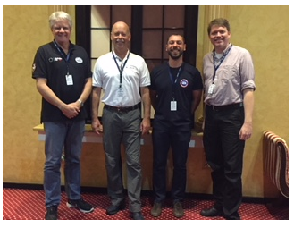

Team Leaders Meeting Chile, October 2019
INSARAG Light team Working Group Chairman Summary
Attached, the Classified Light Usar Team Position
Completed work of the LTWG:
The document “Introduction LT” describes the concept of International Light Teams. At this moment the Guidelines text for the GRG has been assembled and rewritten on the Light concept and needs a final check to see if it is complete. The results will be shared with you before the coming summer holidays.
The document “Quality Assurance explanations” describes the advice of the LTWG to the new QAWG. A PowerPoint presentation is added to clarify the text and to show how a classification process could be setup for International Light. And at the same time could be used for a discussion about the classification process for Medium and Heavy in the future in the attempt to reduce the amount of work to assure the existing quality.
The document “USAR scale” explains the differences between national, regional and international deployment of USAR teams and the need for the type of quality assurance. The LTWG thinks that this document will clarify the inter-linkage between International Light teams and existing systems National-, Neighbour assistance- and classified International Medium and Heavy teams. A PowerPoint “National Regional and International assistance scale” is added to show the build-up of a large scale incident.
The document “LTWG Meeting Chairman summary Valabre” is a reflection of the work of the LTWG during the final meeting in France in April 2017.

Chair of LTQAWG: Mr. Arjan Stam
| Arjan Stam | Netherlands | AEME | Co-Chairman | Arjan.Stam@ifv.nl |
| Rob Davis | UK | AEME | Co-Chairman | Rob.Davis@avonfire.gov.uk |
| Christophe Debray | France | AEME | Member | cdebray55@yahoo.com |
| Brad Comments | Australia | Asia-Pacific | Member | Brad.Commens@qfes.qld.gov.au |
| Ruihua Zhao | China | Asia-Pacific | Member | ceazhaoruihua@126.com |
| Sebastian Hodapp (Johannes Gust) | Germany | AEME | Member | s.hodapp@at-fire.de |
| John Ball | UK | AEME | Member | johncball@hotmail.co.uk |
| Carlos Julio la Mota | Ecuador | Americas | Member | cjlamota@gmail.com |
| Martin Gomez Lissarrague | Argentina | Americas | Member | mglissarrague@gmail.com |
| Chew Keng Tok | Singapore | Asia-Pacific | Member | CHEW_Keng_Tok@scdf.gov.sg |
| Cem Behar | Turkey | AEME | Member | cembehar@gmail.com |
At the INSARAG Steering Group Meeting (ISG) in 2016, the group directed the Secretariat to initiate the establishment of an INSARAG Light Teams Working Group (LTWG) with clear terms of reference and to request INSARAG regional groups to nominate suitable members. Relevant members from existing working groups could be co-opted. The LTWG will take the lead and, following consultations with the regional groups in 2016, present the recommendations to the ISG of 2017 for a decision.
The LTWG is made up of representatives coming from the three INSARAG Regional Groups, and are selected from different USAR Teams Heavy, Medium and non-classified teams selected by the Secretariat. The LTWG is chaired by Arjan Stam, Team leader from the Dutch USAR team, chair of the UCC in the earthquake of Nepal, IEC/IER Team leader and the member of the GRG.
The first meeting of the LTWG was held in Geneva from 15-17 June 2016 and was also attended by the Chair of the TWG Mr Dewey Perks.
Chairman's Summary - First LTWG Meeting 15-17 June 2016
Proposal External support and Validation process National Accreditation_ENG